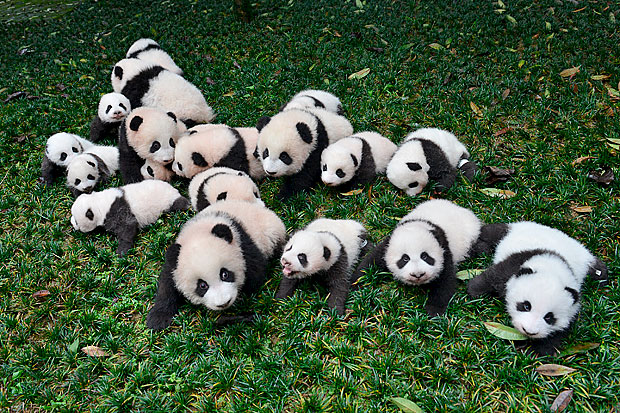

O Panda-gigante (Ailuropoda melanoleuca) é um mamífero conhecido por sua pelagem preta e branca, adaptada para suportar baixas temperaturas em ambientes subalpinos. Suas manchas oculares, membros, orelhas e uma faixa nos ombros são negras, às vezes com um tom acastanhado. O restante do corpo é branco, podendo ficar "encardido" com a idade. Na região de Qingling, alguns pandas têm uma pelagem em dois tons contrastantes de castanho. Esses animais se alimentam principalmente de bambu, incluindo suas folhas.
O Panda-gigante está confinado ao centro-sul da China. Sua distribuição atual consiste em seis áreas montanhosas isoladas (Minshan, Qinling, Qionglai, Liangshan, Daxiangling, e Xiaoxiangling), nas províncias de Gansu, Shaanxi e Sichuan. Os pandas habitam as florestas temperadas montanhosas com densos bambuzais, principalmente do gênero Sinarundinaria, entre altitudes de 1 200 a 4 100 metros de altitude.
Os Pandas-gigantes são geralmente solitários. Cada adulto tem um território definido e as fêmeas não são tolerantes com outras fêmeas no seu território. Os pandas comunicam através de vocalização e marcam território arranhando árvores e urinando nas suas fronteiras. O panda gigante é capaz de escalar e usar como refúgio árvores ocas ou fendas de rochas, mas não estabelece tocas permanentes. Por esta razão, os pandas não hibernam, o que é semelhante ao hábito de outros mamíferos subtropicais da região, que preferem deslocar-se para regiões e altitudes com temperaturas mais quentes. Ao contrário do que se pensa, os pandas não são dóceis, eles podem apresentar comportamento agressivo, sendo, então, muito perigosos. Os pandas utilizam mais da memória espacial do que da memória visual.

Ordem: Carnivora
Família: Ursidae
Gênero: Ailuropoda
Espécie: Ailuropoda melanoleuca